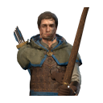
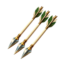

待使用者確認風格
擴編兵種訓練圖示與英雄技能圖示 · 2026-10-17
擴編兵種在 rosterPreview 開啟時才出現。訓練圖示沿用已核准的 3D 模型渲染流程；技能圖示由 codex 內建生圖產生，再經確定性去背。
1. 訓練圖示（遊戲尺寸 48px，指令卡底圖）
長槍兵、遊俠、曦光法師依目前的 GLB 重新渲染（握拳手部與待機姿勢在舊圖之後才改）。renderer、燈光、待機姿勢、取景與檢查門檻都和已核准的 2026-10-16 圖示相同。獅鷲騎士、曦光賢者、遊俠隊長還沒有執行期模型，所以維持文字按鈕。
長槍兵金 80 · 木 10 · 人 2Q
遊俠金 120 · 木 50 · 人 2

E曦光法師金 140 · 木 70 · 人 2R
獅鷲騎士無執行期模型 · 文字按鈕T
曦光賢者無執行期模型 · 文字按鈕F
遊俠隊長無執行期模型 · 文字按鈕G
2× 檢視
長槍兵金 80 · 木 10 · 人 2Q
遊俠金 120 · 木 50 · 人 2E
曦光法師金 140 · 木 70 · 人 2R
與已核准兵種並排（48px）
2. 英雄技能圖示（遊戲尺寸 48px，指令卡底圖）
誓衛統領（既有，已上線，本輪沒有改）
破陣斬魔 · 1 階Q
戰地救援魔 · 1 階E
王旗魔 · 1 階R
曦光賢者
曦光爆裂魔 60 · 1 階Q
晨輝療癒魔 70 · 1 階E
破曉魔 110 · 1 階R
遊俠隊長
箭雨魔 55 · 1 階

Q疾行號令魔 50 · 1 階E
獵殺標記魔 60 · 1 階R
2× 檢視
曦光爆裂魔 60 · 1 階Q
晨輝療癒魔 70 · 1 階E
破曉魔 110 · 1 階R
箭雨魔 55 · 1 階T
疾行號令魔 50 · 1 階F
獵殺標記魔 60 · 1 階G
與既有技能、指令圖示並排（上排既有，下排新圖）
可讀性（24／32／48／64px；棋盤格、暗底、亮底、alpha）
原圖（洋紅底）與去背結果
機械檢查
| 技能 | id | 英雄 | 邊距 | key 殘色（洋紅） | 2px 外半透明 | 貼邊 | 誤刪非 key 像素 | 結果 |
|---|---|---|---|---|---|---|---|---|
| 曦光爆裂 | sunburst | 曦光賢者 | [12, 12, 12, 12] | 0/0 | 0 | 0 | 0 | 通過 |
| 晨輝療癒 | radiance | 曦光賢者 | [40, 12, 40, 12] | 0/0 | 0 | 0 | 0 | 通過 |
| 破曉 | daybreak | 曦光賢者 | [12, 18, 12, 18] | 0/0 | 0 | 0 | 0 | 通過 |
| 箭雨 | volley | 遊俠隊長 | [15, 12, 15, 12] | 0/0 | 0 | 0 | 0 | 通過 |
| 疾行號令 | sprint | 遊俠隊長 | [12, 17, 12, 18] | 0/0 | 0 | 0 | 0 | 通過 |
| 獵殺標記 | mark | 遊俠隊長 | [12, 15, 12, 15] | 0/0 | 0 | 0 | 0 | 通過 |
內部孔洞都是尖刺、羽毛之間的背景空隙，以及號角背帶圈內的背景；誤刪非 key 像素為 0。生成紀錄在 raw/*.gen.json（提示詞、codex log、原始輸出 sha256）。sunburst 和 sprint 的 codex 曾自行加工複本，已換回 image_gen 原始輸出，紀錄於 provenance_fix。
3. 遊戲內截圖（rosterPreview 開啟，1024 與 1600 寬）
截圖只放了建築：預覽英雄沒有執行期模型，不能放進 3D 戰場，所以技能卡和預覽兵種的多選列表無法在遊戲內截圖，改由上方指令卡與 hud-roster.test.ts 驗證。截圖檔在本機 tmp/rts/visual-roster-icons/，沒有進版控。